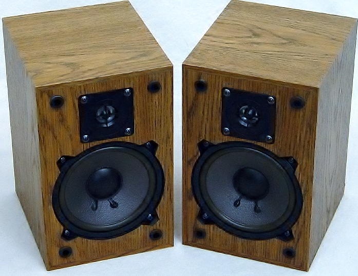
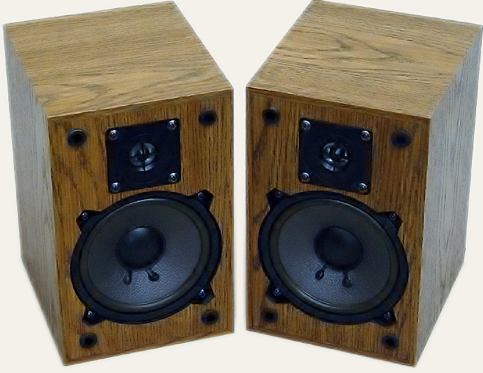
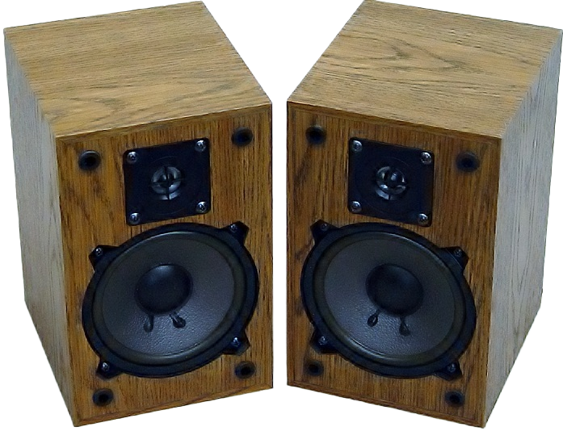
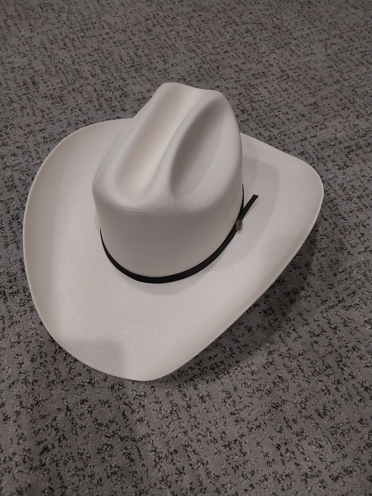
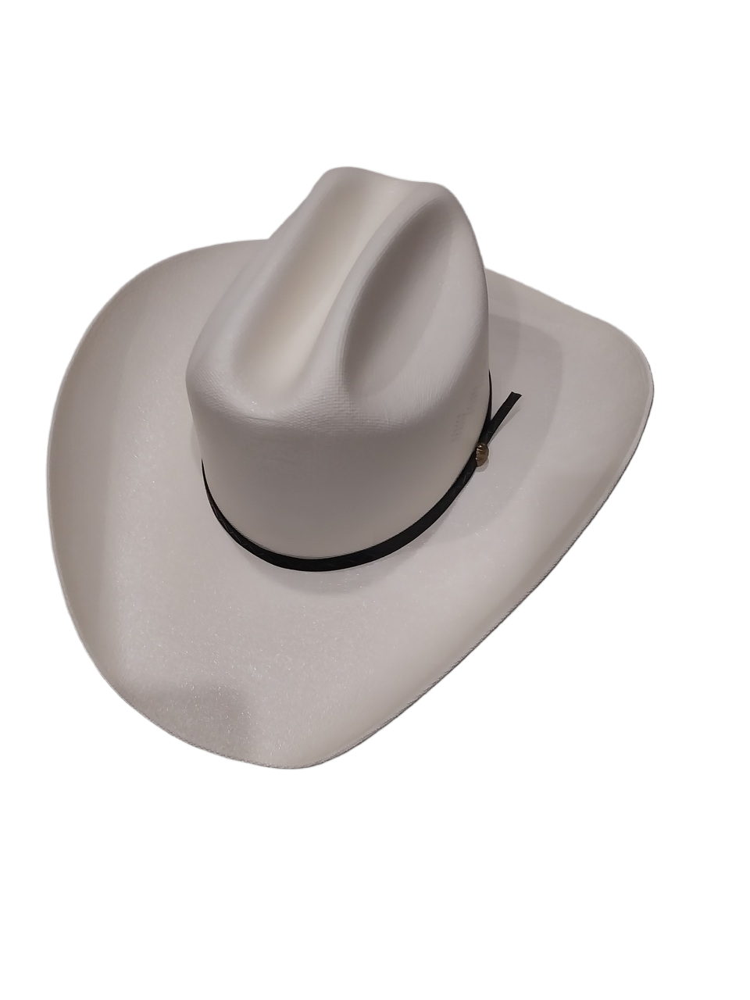
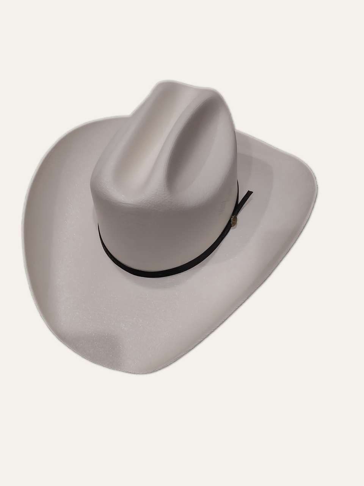

Input
Original photo
The speakers are still part of their original scene.
Remove backgrounds, select people or objects, and transform images through simple API requests. Every example below uses a real API response so you can see what each capability actually does.


BiRefNet separates the main subject from its surroundings. The API can return a transparent PNG or place the isolated subject onto a new background.
The speakers are still part of their original scene.

The surrounding background is removed while the product remains.
The isolated product is placed onto a clean neutral background.
The hat has a wider curved outline, showing how the same endpoint handles a different shape and material.

Large curved silhouette on a textured wooden background.

A second object-removal case with a substantially different outline.

Feathered output recomposited onto a clean neutral background.
These examples separate the interaction from the result: the first image shows the prompt you give MobileSAM, the second highlights what the model selected, and the third is the raw black-and-white mask returned by the API.
A single positive point tells MobileSAM which nearby object the user means. This is the simplest interaction for a click-to-select interface.
The box narrows the search region around the cat. This interaction fits crop tools, annotation UIs, and workflows where the user can drag a rectangle.
Several horses are visible, but the positive point targets the white horse in front. This makes the purpose of a prompt much clearer than an image containing only one obvious subject.
The same portrait makes the distinction easy to see: BiRefNet changes the scene around the person, while MobileSAM identifies the pixels that belong to the person.
Use background removal when you want a cutout or a new scene. Use segmentation when you need a mask that tells software exactly which pixels belong to the selected subject.
These operations do not use an AI model. libvips performs repeatable resize, crop, color, sharpening, tint, and WebP transformations.
Resize-to-fill plus restrained contrast, saturation, sharpening, and WebP output.
A 16:9 crop with subtle tonal enhancement for web hero placement.
Resize, contrast, restrained tint, sharpening, and WebP export in one request.
Each item opens in a lightbox with zoom, navigation, and its original pixel dimensions.